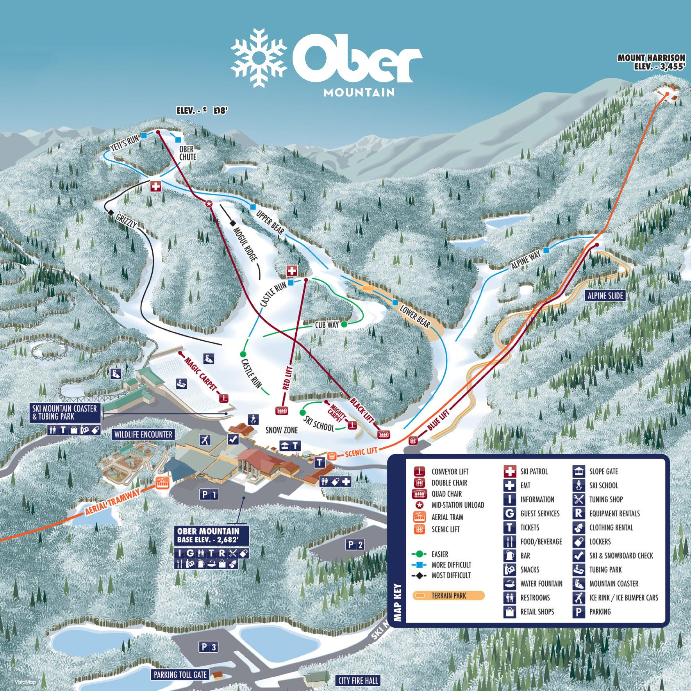

Ober Mountain
Ober Mountain in Gatlinburg, Tennessee, offers a unique blend of activities, attracting visitors in every season. With its enchanting winter ski slopes and lively summer trails, this destination is a magnet for those seeking both adventure and relaxation. The renowned aerial tramway and scenic hikes at Ober Mountain create experiences that guests cherish, ensuring a consistent flow of visitors. Discover the captivating appeal of Ober Mountain, a place where every season brings new reasons for guests to visit and revisit.
Visit Ober Mountain